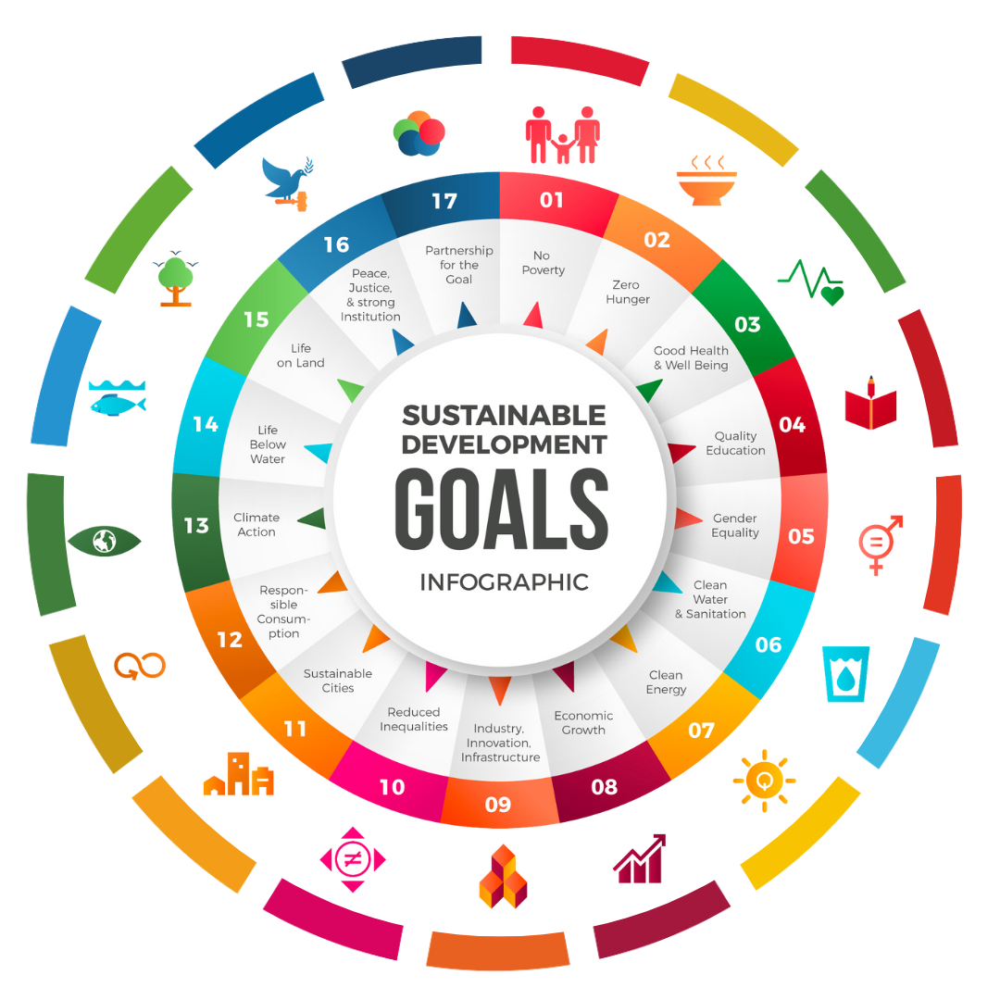

- Tanpa Kemiskinan (No Poverty)
- Tanpa Kelaparan (Zero Hunger)
- Kehidupan Sehat dan Sejahtera (Good Health and Well Being)
- Pendidikan Berkualitas (Quality Education)
- Kesetaraan Gender (Gender Equality)
- Air Bersih dan Sanitasi Layak (Clean Water & Sanitation)
- Energi Bersih dan Terjangkau (Clean Energy)
- Pekerjaan Layak dan Pertumbuhan Ekonomi (Economic Growth)
- Industri, Inovasi dan Infrastruktur
- Berkurangnya Kesenjangan (Reduced Inequalities)
- Kota dan Permukiman Berkelanjutan
- Konsumsi & Produksi Berkelanjutan
- Penanganan Perubahan Iklim
- Ekosistem Lautan (Life Below Water)
- Ekosistem Daratan (Life on Land)
- Perdamaian & Kelembagaan yang Tangguh
- Kemitraan untuk Mencapai Tujuan
